01 · Inversion Architecture
反演架构与受控变量
三组实验使用相同模型、采集几何、策略参数化与优化器，仅替换 reward，从而把收敛差异归因于目标函数设计。
由真实 CVA 模型构造统一的低波数初始速度。
在 4×4 控制点空间采样 G=32 个候选动作。
将低维控制点插值为 70×70 候选速度模型。
透射式采集几何下生成每个候选模型的合成炮集。
分别采用 TT-only、L1+L2 或 Contrastive。
在组内标准化 reward，得到相对优势信号。
通过 clipped surrogate loss 更新策略分布。
策略更新后返回步骤 02，继续采样与迭代 ↺
02 · Reward Design
三类 Reward 的信息侧重
三类目标分别关注事件到达时间、逐点振幅误差和弱相位依赖的整体相似度，代表从大尺度运动学到波形细节的不同约束。
TT-only
只比较初至走时，主要约束背景速度和大尺度结构；对振幅误差不敏感，但无法充分利用后续反射事件。
L1 + L2
同时约束稀疏大残差与整体能量误差，能够细化波形，但初始模型较差时仍可能受到 cycle skipping 影响。
FWI Contrastive
联合频谱余弦相似度与最大归一化互相关，对绝对振幅和小范围时移更宽容，强调事件形态和频率结构。
03 · Controlled Comparison
六个模型上的初始比较
指标为历史最佳速度 MAE，单位 m/s，数值越低越好。着色单元格表示三种候选 reward 在该模型上的最佳结果。
| Reward | CVA18 | CVA50 | CVA10 | CVA6 | CVA8 | CVA5 |
|---|---|---|---|---|---|---|
| TT-only | 10.2 | 36.9 | 150.0 | 58.4 | 75.1 | 106.0 |
| L1 + L2 | 83.1 | 39.2 | 247.3 | 33.5 | 22.8 | 212.6 |
| FWI Contrastive | 38.3 | 27.6 | 97.5 | 65.8 | 130.3 | 90.3 |
TT-only：六模型结果
整体表现相对稳健，CVA18 达到 10.2 m/s；但在 CVA10 等困难模型上，单纯走时约束不足以恢复完整细节。
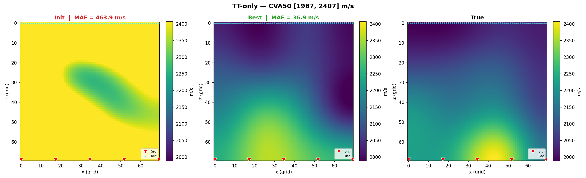
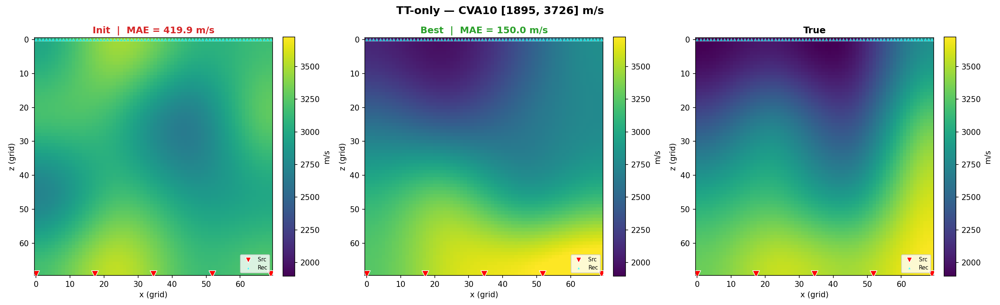
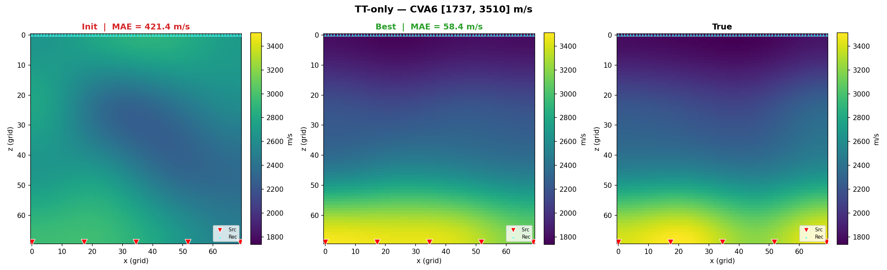
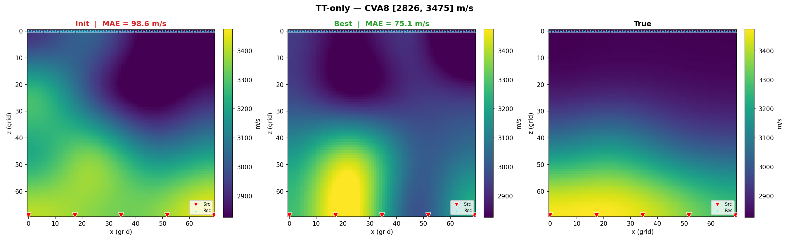
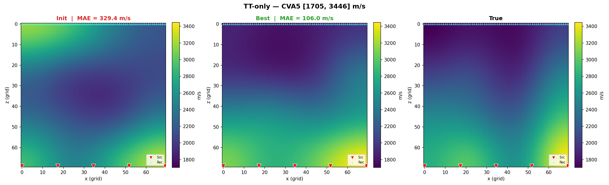
L1 + L2：六模型结果
CVA6、CVA8 上细化能力突出，但 CVA10、CVA5 明显失效，说明逐点波形残差对初始波形对齐和模型难度非常敏感。
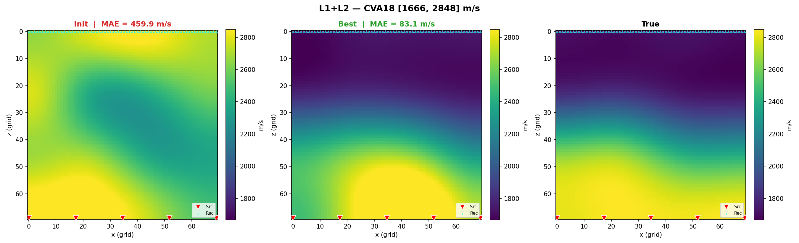
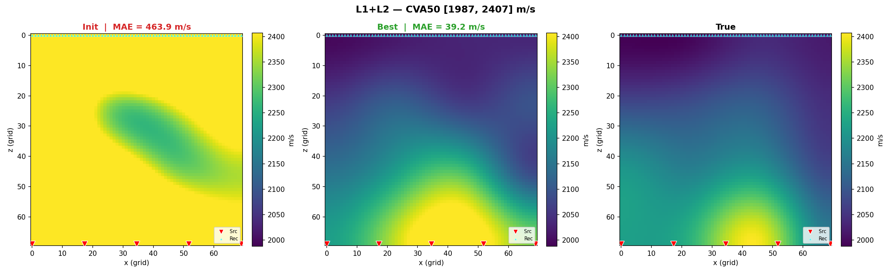
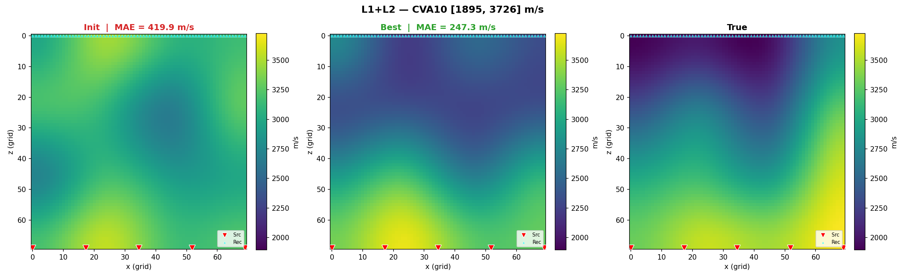
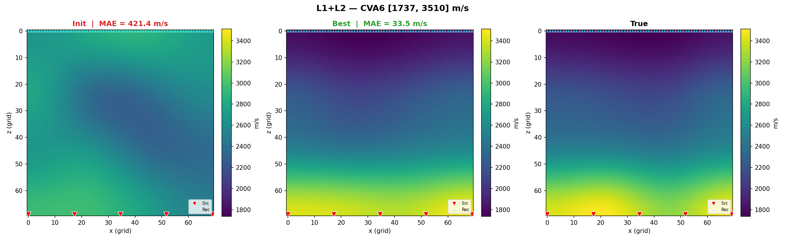
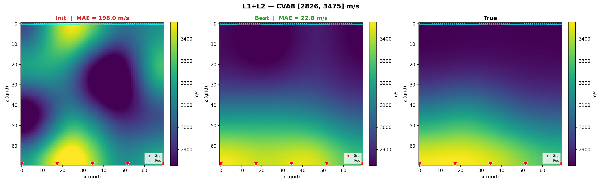
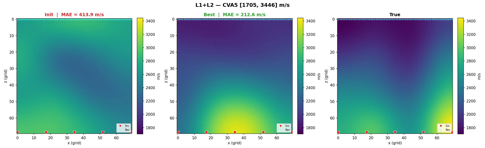
FWI Contrastive：六模型结果
在 CVA50、CVA10、CVA5 上取得三者中的最低 MAE，表明频谱和最大相关性对波形错位更宽容；但 CVA8 上并不稳定。
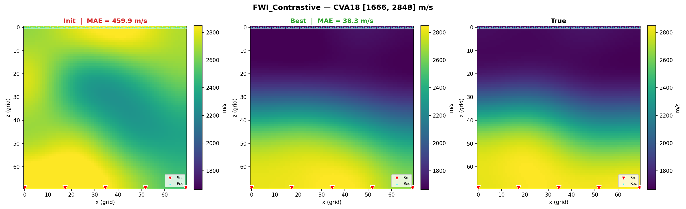
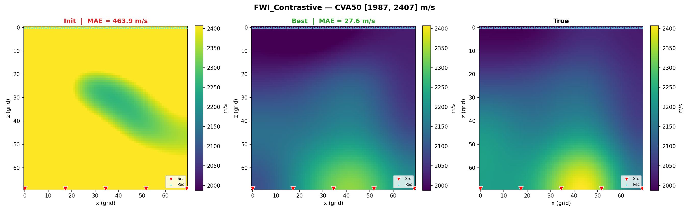
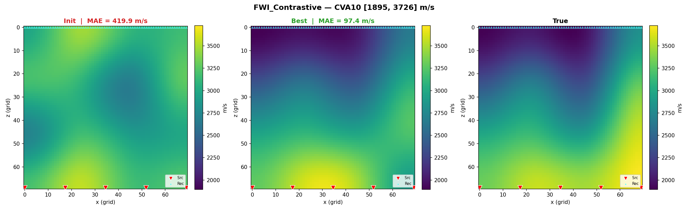
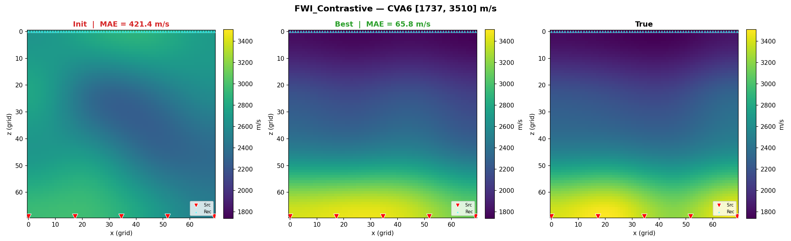
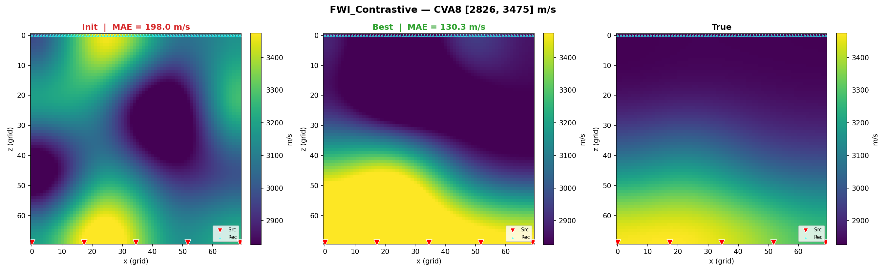
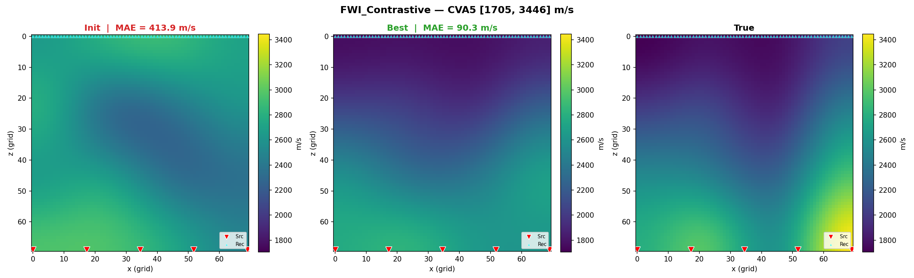